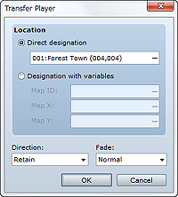
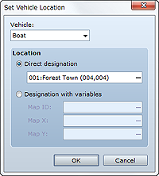
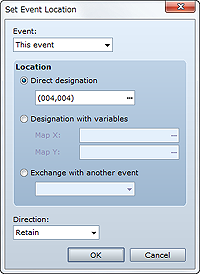
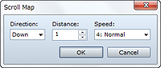

Changes the party's location.
Specify the location to which to move. To move to a specific location, select Direct designation, click ..., and then in the dialog box that appears, click the location to which to move. To specify a location using a map ID and coordinates, select Designation with variables and select the variables to look up in Map ID, Map X, and Map Y.
Specify the direction the player will be facing after the move.
Specify the screen transition method when transferring the player from one location to another. Normal fades to black before displaying the destination map, while White fades to white.

Changes the location of a vehicle.
Specify the target vehicle (Boat, Ship, or Airship).
Specify the location to which to move. To move to a specific location, select Direct designation, click ..., and then in the dialog box that appears, click the location to which to move. To specify a location using a map ID and coordinates, select Designation with variables and select the variables to look up in Map ID, Map X, and Map Y.

Changes an event's location.
Select the target event. Selecting This Event makes the event you are currently setting up subject to the move. Only events on the same map can be moved.
Specify the location to which to move. To move to a specific location, select Direct designation, click ..., and then in the dialog box that appears, click the location to which to move. To specify a location using a map ID and coordinates, select Designation with variables and select the variables to look up in Map ID, Map X, and Map Y.
・Cannot be used in battle events.

Scrolls the map displayed on the game screen without moving the player's location.
Specify the direction in which to scroll.
Specify the distance to scroll (in tiles).
Specify the scrolling speed (6 levels).
・If this event command has been set to run repeatedly, the next scroll operation will not start until the previous one ends.
・Unless the map is returned the exact distance it was scrolled, its currently displayed position will be offset from the player's position.
・This command cannot be used in battle events.
Forces the player or map event to move along a specific route.
Select the command's target (Player or Event).
Use movement commands to specify the route. See Setting Move Routes for more information.
Selecting this option makes the command list for the movement route run repeatedly.
Selecting this option skips commands that cannot run, such as when the player cannot move because of some sort of obstacle.
Pauses event processing until the specified move commands have all completed.
・Movement starts immediately for the character for which the route was set.
・Running this event command for a character for which a move route was already set will result in the discarding of settings made up to that point. Only the latest setting will be valid. To set the next movement route after the previous one ends, select the Wait for Completion option.
・When Wait for Completion is selected, the player will not be able to perform any operations until the movement commands finish (parallel processing excluded). If a movement command cannot run because the character for which the movement route is specified bumps into an obstacle or otherwise impassible area, processing ends immediately. You can avoid such situations by selecting the Skip If Cannot Move option.
・Even if the player moves via this event command, it will not add to the total number of steps moved.
・This command cannot be used in battle events.
Controls getting on/off of vehicles. If on a vehicle, the player will get off, and if not on a vehicle, the player will get on. There are no settings to be made for this command.
・The player usually presses the confirm key to get on/off of a vehicle, but this event command forces that transition. Nothing happens if normal getting on/off operation is impossible (for example, when there are no vehicles to get on or the player cannot get down to the ground).
・This command cannot be used in battle events.